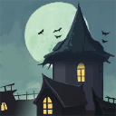

<div class="panel panel-default button-panel">
    <div class="panel-heading">
        
        

        <h3 class="panel-title">Witchhunter's guild
            <small>(Quests)</small>
        </h3>
    </div>
    <div class="panel-body">
        <div class="row">
            <div class="col-xs-12">
                <div class="row">
                    <div class="col-xs-4 big-button" ui-sref="witchhunters-guild-main">
                        
                        
                        <span class="big-button-text">Guild Hall</span>
                    </div>
                    <div class="col-xs-4 big-button" ui-sref="witchhunters-guild-job">
                        
                        
                        <span class="big-button-text">Quests</span>
                    </div>
                    <div class="col-xs-4 big-button" ui-sref="witchhunters-guild-shop">
                        
                        
                        <span class="big-button-text">Shop</span>
                    </div>
                </div>
            </div>
        </div>
        <div class="row">
            <div class="col-md-12 col-lg-12">
                <h3 class="text-center">Quests</h3>

                <div class="description-holder" style="margin-bottom: 10px;" hm-read-more hm-limit="300"
                     hm-text="Through a blackened corridor laid the Guild's infamous and beloved trophy room. It was an amusing display on five different surfaces. The walls to the left, front and right - as well as the floor and ceiling. Directly in front of you were the numerous skulls of demonic beasts, mythical lycanthropes that were believed to be long ago hunted into extinction, necklaces made of vampire fangs and the shrunken head of a brown furred, yeti-like beast. On the floor were numerous rugs made from the hides of werewolves, giant wolves, rats of unusually large size and a pair of boots made from the scaly skin of a Ork serial killer and demon worshiper who suffered from a rare skin condition. To the right, were numerous magical artifacts made to combat various evil sorceries and magical beings. Often swords of twisted designs and embedded with silver Runes, a few pieces of destroyed armour that once was magically enforced and used by a mad wizard named Griftlock as well as Griftlock's dreaded Urn. His ashes were said to be used to create powerful alchemiac powders and pastes, at the cost of cursing whoever looks directly into his final resting place. At the center of the artifacts, was a single mirror with a divine, golden Elven trim.<br><br>In its reflection, on the opposite wall - a statue of a Medusa beast. Perhaps it was the same mirror that had allowed the monster to turn itself into stone. The statue was engraved with Runic engravings that ensured it could never be broken down and repurposed into powerful weapons or alchemy ingredients by those who practiced the most dark of magics. Around the Medusa were framed pages from numerous forbidden books, incantations that were so evil that the glass that imprisoned them was often obscured by alchemy-paste - for even thinking of them could cause massive destruction in the wrong hands of an untrained pupil or non-magic user with a weak mind. Yet, of all things, this was the least strange section of the trophy room.<br><br>Above, on the ceiling, an ancient demon was mummified with tightly wrapped paper bindings that held him in place as if they were chains. The monstrous, horned form was basically imprisoned on the ceiling - the paper wrappings being covered in delicately painted runes that formed a spell which bound the consciousness of the beast outside of the physical plane. As a result, the heaviness of their soul turned its demonic body into a mere shell of its former self. It weighed virtually nothing, while its astral form was cut and placed individually into each sigil on the paper bindings. It was a cocoon, essentially - but no disastrous butterfly would emerge from it unless the powerful spell was intentionally broken by its creator. The astral form of the demon was weak, at most - one could see the angry face of the demon appear on the ceiling which its corpse was pressed against - drawn in soot. Said drawings were rather amateur and unimpressive. Years of having their astral form disconnected had forced the demon to revert to a child-like state. A lonely one, at that."></div>
            </div>
        </div>
    </div>
</div>